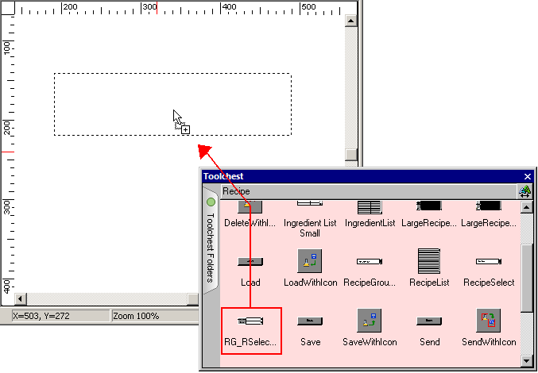
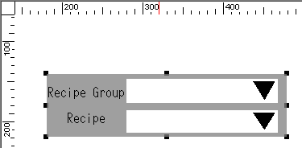
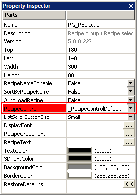

|
|
|
|
|
|
|
|
You can create a recipe manager and lists to select the recipe group or recipe. You can create an ingredient list to edit the current ingredient values in the recipe group. This section describes an example of how to create a recipe manager. When you use the recipe manager to select the recipe group or recipe, the associated value is written to the recipe control variable.
Click the Toolchest icon  in the
menu bar to open the Toolchest window, and select the Recipe folder.
in the
menu bar to open the Toolchest window, and select the Recipe folder.
Move the recipe part onto the panel using the drag and drop operation.

The part is displayed on the panel

In the part's properties, assign the recipe control group.

Define the part's display properties as required by your application:
Color – Set the color for the text and part.
Font – Set the font for the text.
Scroll button size – Set the size (large or small) of the arrow button.

Button size settings are only available for target types with a 20x20 touch grid. Targets with 40x40 touch grids will be set to large buttons. For a list of target type touch grids, see Appendix 5.1.4, Touch Grids.
When you change the scroll button size, the change will not be shown in the Editor. To view the size change of the buttons, you must run simulation or download the project to a target.
When you change the size of scroll buttons from small to large, the size of the Recipe part will not change, just the size of the scroll buttons. As a result, the larger buttons may shorten the text fields next to them. To accommodate the larger button size, you may want to make the Recipe part larger, or shorten recipe names or ingredient names to ensure they fit in the shorter text fields.
In the RecipeNameEditable property, select True to rename recipe names in the Recipe list box. In run time, this function displays a keypad so you can edit the name of a recipe.
In the SortByRecipeName property, select True to sort all the recipe names in the Recipe list box alphabetically. In run time, this function displays a keypad when you select the Recipe list box, so you can enter one or more characters of the recipe name and jump to the recipe.
The SortByRecipeName and RecipeNameEditable properties are available for the following Recipe Toolchest parts:
LargeRecipeMgr
LargeRecipeMgrwithIcons
RG_Rselection
RecipeSelect
SmallRecipeMgr
SmallRecipeMgrWithIcons
In the AutoLoadRecipe property, select True to automatically load recipe data from the PLC to your project. The AutoLoadRecipe property is available only for the RecipeSelect Toolchest part.

When the RecipeNameEditable and the SortByRecipeName properties are both set to True, the RecipeNameEditable function takes priority over the sort function. The keypad that displays is for editing the current recipe name and not for sorting. For more information on editing recipe names, see Section 17.6.7.3, Renaming Recipes.
Though you can set up Unicode recipe names in the editor to display in run time, you cannot sort Unicode recipe names.
If you are creating a list, go to Section 17.4.1.2, Creating Recipe Operation Buttons, to create a recipe operation button.